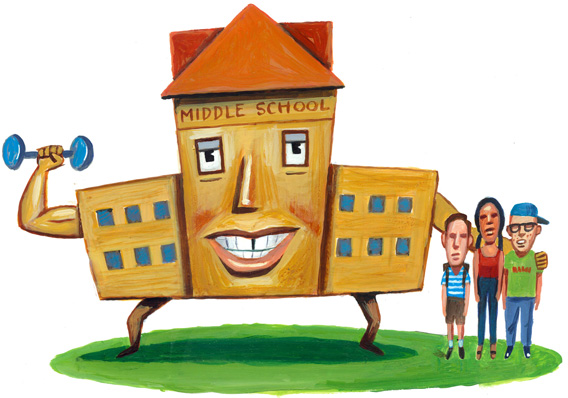
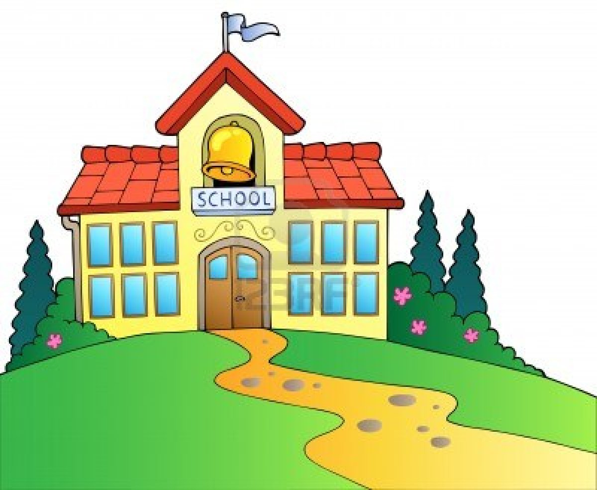
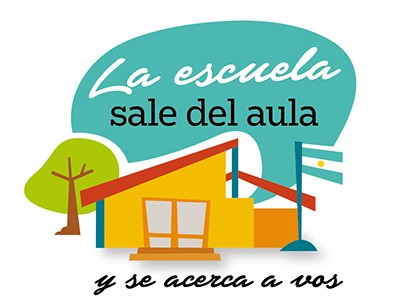
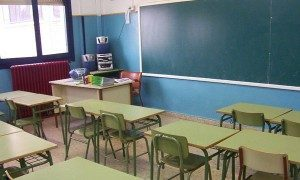

Contenido bibliográfico
Alimenta tú imaginación con un nuevo enfoque pedagógico
   
Libros que rompen paradigmas
La educación repensada
Con el subtítulo de ‘Dinámicas de continuidad y cambio’, Remedios Belando Montoro, autora de la obra, trata de ordenar importantes cuestiones educativas: desde la educación como idea, hecho y desafío, al ser humano como condición de posibilidad y horizonte de la educación. El libro trata también sobre las condiciones, los contextos y los agentes para revisar el sentido de la educación como proceso y profesión. Además, analiza las grandes finalidades educativas en el mundo e incluye temas básicos en la formación de educadores desde una visión actual y orientada a facilitar la comprensión de los problemas y retos a los que se enfrenta la educación del siglo XXI.
La alegria de enseñar
La primera tarea del educador, según su autor, Rubem Alves, es dar a los alumnos razones para vivir. El libro reivindica el derecho de los niños a vivir una escolaridad plena y placentera en la que los maestros deben enseñar con alegría y ser conscientes de que la enseñanza es un ejercicio de moralidad
Aprobar o aprender
de Enrique Bono. El autor, en base a sus investigaciones, compartidas y reflexionadas con los docentes y puestas en práctica con jóvenes estudiantes, plantea un camino de mejora en la adquisición de un aprendizaje de calidad, significativo y eficaz, próximo a un aula experimental. El libro cuestiona el nivel de calidad del aprendizaje actual de los jóvenes, y pone sobre la mesa las mayores deficiencias de las didácticas actuales y del propio sistema educativo, atendiendo a los más recientes estudios y a los descubrimientos de la neurociencia cognitiva
Ideas creativas para educar
de Enrique Sánchez: Saber más que el alumnado sobre Matemáticas o Lengua sirve para formar, pero para educar es necesario conocer más de pedagogía. El libro muestra las teorías más relevantes de esta ciencia a través de anécdotas, ejemplos y reflexiones fruto del trabajo diario en la escuela, algo que puede interesar tanto a los docentes como a las familias. Cada experiencia conduce a un conocimiento práctico (alejado de la abstracción teórica de los manuales) y propone estrategias diferentes para usar en casa o en clase: ideas creativas, generadas y contrastadas en situaciones reales, y también pensadas para ser utilizadas. Este texto se complementa con un blog para fomentar la participación
Inteligencia emocional
de Daniel Goleman: Goleman es doctor por la Universidad de Hardward y esta obra es un best seller basado en las investigaciones más avanzadas que se han realizado alrededor de la conducta y el cerebro. El punto de partida de esta lectura, que tiene algo más de 500 páginas, plantea la siguiente pregunta: ¿el coeficiente intelectual que tienen las personas determina realmente su destino? También entra en juego la inteligencia emocional y aspectos de la personalidad como la motivación, la empatía, la perseverancia o la motivación, entre otros.